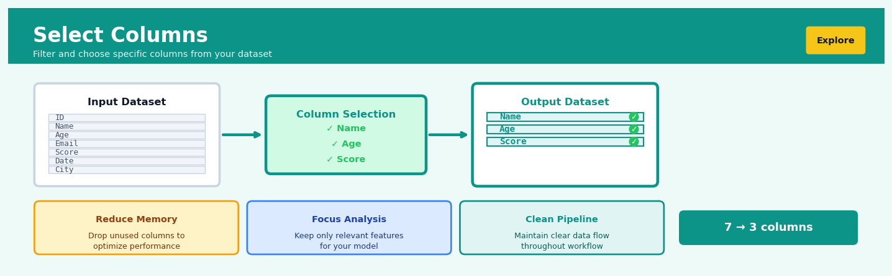
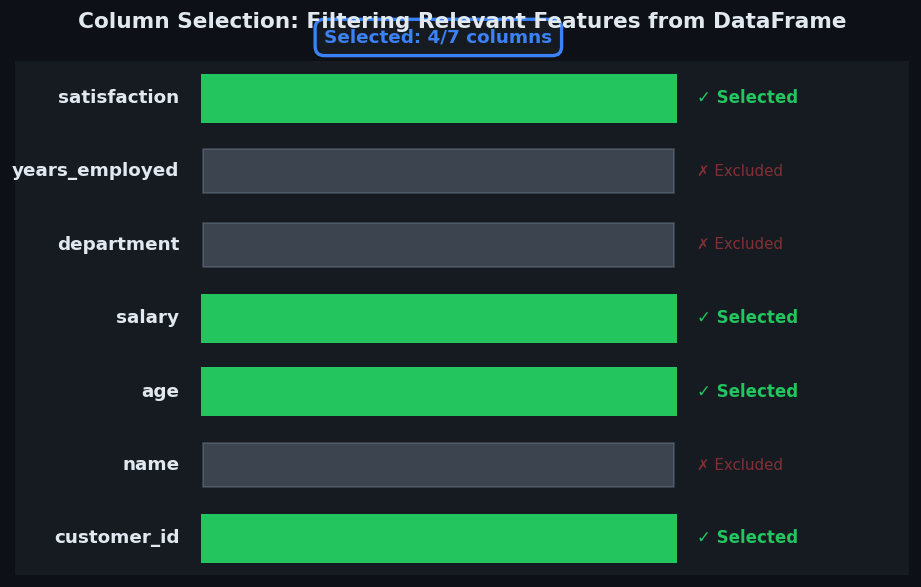
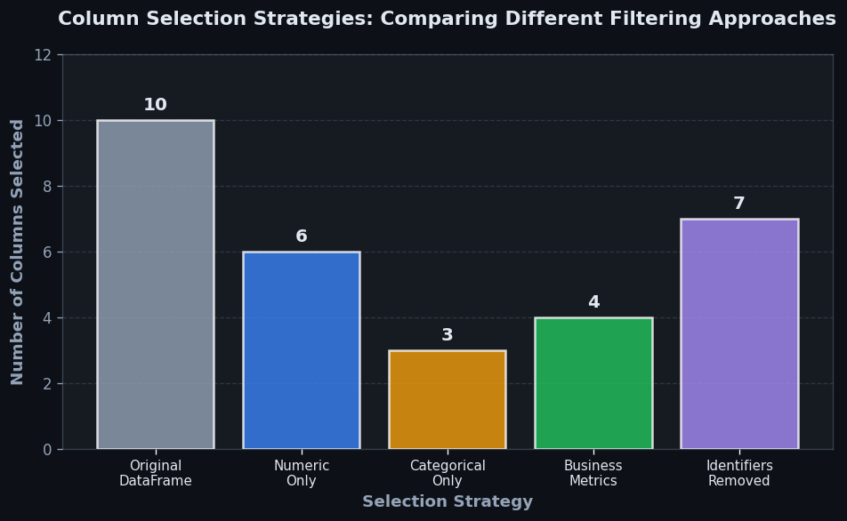

Select Columns#


The biggest mistake I see is selecting columns too early in the pipeline before understanding their relationships. Keep columns that seem irrelevant at first because they might be crucial for creating interaction features or detecting data quality issues. You can always drop them later, but recreating them upstream is a nightmare in production.
The 60-Second Version#
What it does: Select Columns removes unnecessary columns from your dataset, keeping only the variables you actually need.
When to use it: You have a dataset with dozens or hundreds of columns, but your analysis only requires a handful of them—like extracting customer name, purchase date, and revenue from a sales export that includes 47 other fields you’ll never use.
What you get back: A streamlined dataset containing only your chosen columns with all original rows intact, ready for faster analysis and clearer visualization.
At a Glance
Difficulty |
Easy |
Typical runtime |
Seconds on millions of rows |
What you bring |
A dataset and a list of column names to keep |
What you get |
The same dataset with only selected columns |
Heuristix bucket |
Explore — Shaping & Transforming Data |
Removing irrelevant columns isn’t just cosmetic—it prevents costly mistakes by ensuring analysts and models only see the data they’re meant to use.
Learning Objectives#
After reading this chapter, a business user will be able to:
Identify situations where reducing dataset width solves real problems, such as simplifying reports, protecting sensitive information, or focusing team attention on actionable metrics.
Interpret column selection results by comparing before-and-after dataset structures and explaining to stakeholders which variables were retained and why they matter for the analysis.
Decide which columns to include in stakeholder-facing reports by evaluating relevance to business questions, regulatory requirements, and audience technical sophistication.
After reading this chapter, a data scientist will be able to:
Implement column selection using multiple methods (explicit lists, pattern matching, type-based selection) while correctly handling edge cases like missing columns, duplicate names, and empty result sets.
Choose between selection strategies (keeping vs. dropping, index vs. name-based) by weighing trade-offs in code maintainability, robustness to schema changes, and computational efficiency.
Validate selection outputs by checking for unintended column loss, verifying downstream compatibility, and diagnosing failures caused by naming conflicts or incorrect pattern specifications.
Overview#
Select Columns is a fundamental data shaping operation that extracts a specified subset of columns (variables) from a tabular dataset, producing a new dataset containing only the chosen columns while preserving all rows. This technique belongs to the family of projection operations in relational algebra and serves as the column-wise analogue to row filtering operations. Select Columns is the cornerstone of data preparation workflows, enabling analysts to reduce dataset dimensionality, focus analysis on relevant variables, and ensure downstream nodes receive only the data they require.
When to Use This#
Use this when:
Preparing model inputs: You need to extract only the feature columns required for a predictive model, excluding identifiers, target leakage variables, or irrelevant metadata that would compromise model validity.
Reducing memory footprint: Your dataset contains hundreds of columns but your analysis requires only a handful; selecting the relevant subset can reduce memory consumption by orders of magnitude and accelerate all downstream operations.
Enforcing data contracts: You are building a production pipeline that must output a fixed schema; Select Columns ensures that only the agreed-upon columns propagate forward, regardless of what additional columns may appear in source data.
Isolating sensitive information: Compliance requirements (GDPR, HIPAA, PCI-DSS) mandate that personally identifiable information or protected health information must not flow into certain analytical branches; Select Columns creates a sanitised view.
Preparing data for joins: Before joining two tables, you need to select only the key columns and the specific attributes you wish to bring across, preventing column name collisions and bloated intermediate results.
Creating analytical subsets: Different business stakeholders require different views of the same underlying data; Select Columns enables you to branch a single data source into multiple purpose-specific outputs.
Improving code readability: Explicitly selecting columns at the start of an analysis documents your intentions and makes the data dependencies of your workflow self-evident.
Do NOT use this when:
You need conditional column selection at runtime: If the columns to select depend on data values or must be determined dynamically based on upstream statistics, consider using programmatic column selection or metadata-driven approaches instead.
You should be reshaping rather than selecting: If your goal is to transform wide data to long format (or vice versa), you need pivot or melt operations, not column selection.
The problem is row-based: If you need to filter observations based on criteria, use row filtering operations; Select Columns operates exclusively on the column dimension.
Questions This Answers#
Focusing Analysis on What Matters#
Can we look at just revenue, costs, and margin without all the other noise in this 50-column sales report?
Which customer attributes actually matter for our retention analysis — can we strip out the irrelevant fields?
What if we only examined the metrics that executives care about for the board presentation next week?
Can we see Q4 performance using just the five KPIs we agreed on, not the entire data warehouse?
Is there a way to look at this supplier data without the internal codes and timestamps that don’t mean anything to our procurement team?
Preparing Data for Specific Audiences#
How do I share this customer data with marketing without exposing salary information and credit scores?
Can we send regional managers only their territory numbers without the national compensation data?
What’s the simplest way to give finance just the P&L columns they requested without rebuilding the entire report?
How do we provide our partner company access to shipment details without revealing our supplier pricing?
Can the product team see feature usage and ratings without accessing personally identifiable customer information?
Streamlining Systems and Workflows#
Why is this dashboard taking 45 seconds to load — can we speed it up by removing columns nobody looks at?
Which fields should we pull for the weekly sales review so the report doesn’t crash Excel anymore?
Can we reduce this customer export from 80 columns to something our CRM can actually import without errors?
What’s causing our analytics platform to time out — are we processing unnecessary data columns we don’t even use downstream?
How It Works#
Imagine you’re a recruiter reviewing job applications stored in a massive filing cabinet. Each drawer contains folders for different candidates, and each folder holds dozens of documents: resumes, cover letters, reference checks, writing samples, college transcripts, parking permits, and lunch preferences. You’re hiring for a software engineering role, so you only need three things: the candidate’s name, their programming skills, and their years of experience. Rather than lugging the entire cabinet to your desk, you walk through and photocopy just those three pages from each folder, creating a slim binder that contains everything you need and nothing you don’t. That’s exactly what Select Columns does—it pulls out just the information columns you care about while leaving the rest behind.
BEFORE (Original Dataset) SELECT COLUMNS
┌──────┬─────┬────────┬──────┬────────┐ Selection: name,
│ name │ age │ salary │ dept │ tenure │ salary, dept
├──────┼─────┼────────┼──────┼────────┤ │
│ Anna │ 28 │ 65K │ HR │ 3 │ ↓
│ Ben │ 34 │ 72K │ IT │ 5 │
│ Cara │ 29 │ 68K │ HR │ 2 │ AFTER (Projected Dataset)
│ Dan │ 41 │ 85K │ IT │ 8 │ ┌──────┬────────┬──────┐
└──────┴─────┴────────┴──────┴────────┘ │ name │ salary │ dept │
├──────┼────────┼──────┤
All 5 columns, 4 rows │ Anna │ 65K │ HR │
(age and tenure not needed) │ Ben │ 72K │ IT │
│ Cara │ 68K │ HR │
│ Dan │ 85K │ IT │
└──────┴────────┴──────┘
Only 3 columns, 4 rows
(all rows preserved)
Here’s what happens step by step:
Step 1: Identify your target columns. You specify which columns you want to keep—either by naming them explicitly (like “customer_name, purchase_date, total_amount”) or by using pattern-matching shortcuts. The system creates a list of columns to extract.
Step 2: Scan the original dataset structure. The operation examines the table’s header row to locate each requested column’s position. It’s like checking the tab labels on file folders to find which ones you need.
Step 3: Create the output framework. A new, empty table is constructed with just the column headers you selected, in the order you specified. This becomes the container for your projected data.
Step 4: Copy data row by row. The operation walks through every row in the original dataset. For each row, it extracts only the values from your selected columns and writes them into the corresponding position in the new table. The number of rows never changes—if you started with 10,000 customer records, you’ll still have 10,000 records afterward.
Step 5: Preserve the original data. The source dataset remains completely untouched. Select Columns creates a new view or copy containing just your chosen columns, so you can always return to the full dataset if needed.
Step 6: Output the streamlined result. The operation delivers your new, narrower table to the next step in your workflow, having eliminated all the columns you didn’t select.
The key insight: Select Columns exploits the independence of columns in tabular data—removing irrelevant variables reduces complexity and cognitive load without losing any information about the dimensions you actually care about.
The Intuition#
Imagine you are an archivist managing a vast library of personnel records. Each employee file contains dozens of documents: their original application, performance reviews, salary history, medical records, emergency contacts, and training certificates. When the finance department requests data for payroll processing, you do not photocopy entire personnel files and hand them over. Instead, you extract precisely the documents they need—employee ID, bank account details, current salary—and nothing more. This selective extraction is exactly what Select Columns does to a dataset.
The power of this simple operation lies in its role as a gatekeeper. In any analytical workflow, data flows through a sequence of transformations, and at each stage, irrelevant columns consume memory, slow computations, and increase the cognitive burden on anyone trying to understand the analysis. By selecting only the necessary columns early in a pipeline, you create a leaner, more focused dataset that travels through subsequent operations more efficiently. This is not merely a performance optimisation; it is a design principle that improves maintainability, auditability, and correctness.
Consider also the security and governance perspective. Modern data platforms often connect to enterprise data lakes containing hundreds of columns, some of which may contain sensitive information that analysts should not access for certain purposes. Select Columns acts as a policy enforcement point: by explicitly enumerating which columns may proceed, you create a verifiable contract between data producers and consumers. This explicitness is invaluable during audits, debugging, and handover to new team members who can immediately see which variables are in scope.
The Mathematics#
Formal Problem Setup#
Let \(\mathbf{D}\) be a dataset represented as a relation (table) with schema \(\mathcal{S} = \{A_1, A_2, \ldots, A_m\}\), where each \(A_j\) is an attribute (column) name. The dataset contains \(n\) tuples (rows), so we can represent it as an \(n \times m\) matrix where entry \(d_{ij}\) is the value of attribute \(A_j\) for tuple \(i\).
The Select Columns operation is the relational algebra projection operator, denoted \(\pi\). Given a subset of attributes \(\mathcal{S}' \subseteq \mathcal{S}\), the projection is defined as:
where \(t[\mathcal{S}']\) denotes the restriction of tuple \(t\) to the attributes in \(\mathcal{S}'\).
Matrix Representation#
In matrix notation, let \(\mathbf{D} \in \mathbb{R}^{n \times m}\) (or more generally, a matrix over appropriate domains for each column type). We define a selection vector \(\mathbf{s} \in \{0, 1\}^m\) where:
The number of selected columns is \(k = \sum_{j=1}^{m} s_j = |\mathcal{S}'|\).
We can construct a column selection matrix \(\mathbf{P} \in \{0, 1\}^{m \times k}\) where column \(\ell\) of \(\mathbf{P}\) is the standard basis vector \(\mathbf{e}_{j_\ell}\), with \(j_1 < j_2 < \cdots < j_k\) being the indices of selected columns in ascending order.
The projected dataset is then:
This yields \(\mathbf{D}' \in \mathbb{R}^{n \times k}\), containing exactly the selected columns in their original order.
Properties and Assumptions#
Assumption 1: Column Existence. All columns in \(\mathcal{S}'\) must exist in \(\mathcal{S}\):
Violation of this assumption results in a schema error.
Assumption 2: Non-empty Selection. The selection set must be non-empty:
An empty projection produces a degenerate result—a table with no columns but \(n\) rows, which has limited utility in most systems.
Property 1: Idempotence. Projecting twice on the same columns yields the same result:
Property 2: Commutativity with Row Selection. Let \(\sigma_\phi\) denote row selection (filtering) with predicate \(\phi\). If \(\phi\) depends only on attributes in \(\mathcal{S}'\), then:
This allows query optimisers to push projections down before filters, reducing intermediate data size.
Property 3: Composition. Successive projections on nested subsets compose as intersection:
Edge Cases and Degenerate Conditions#
Full projection (\(\mathcal{S}' = \mathcal{S}\)): Returns the original dataset unchanged.
Single column (\(|\mathcal{S}'| = 1\)): Returns a single-column dataset; useful for extracting a series for univariate analysis.
Empty input (\(n = 0\)): Returns an empty table with the projected schema; schema is preserved even with no data.
Duplicate column requests: If a column is specified multiple times in the selection list, implementations typically either deduplicate or raise an error, depending on semantics.
Relationship to Other Operations#
Select Columns is dual to Select Rows (σ in relational algebra): one operates on the column dimension, the other on rows. Together, they form the basic subsetting operations for tabular data.
In the context of dimensional reduction, Select Columns performs explicit feature selection (as opposed to learned selection via methods like LASSO or recursive feature elimination). The distinction is that Select Columns requires the user to specify columns a priori, whereas feature selection algorithms determine columns based on statistical criteria.
Understanding the Mathematics#
The Column Selection Operation#
The equation:
Read it aloud:
“The select columns operation on dataset D equals the set of all rows from D, where each row contains only the columns specified in C.”
What each symbol means:
\(S_C\) = The select columns operation (a function that filters columns)
\(D\) = The original dataset (your full table of data)
\(C\) = The subset of columns you want to keep (your selection list)
\(r\) = A single row from the dataset
\(r[C]\) = That row, but keeping only the columns in C
\(\{...\}\) = A set (collection) of results
\(\in\) = “is a member of” or “belongs to”
A concrete numerical example:
Suppose you have a customer dataset \(D\) with 1,000 rows and columns [CustomerID, Name, Email, Age, Purchase_Amount, Internal_Notes]. You want only customer contact information, so \(C\) = [CustomerID, Name, Email].
The operation \(S_C(D)\) processes each of the 1,000 rows. For row 347 containing [C10347, “Sarah Chen”, “sarah@email.com”, 34, 299.99, “VIP tier pending”], the result is \(r[C]\) = [C10347, “Sarah Chen”, “sarah@email.com”]. Repeat for all 1,000 rows, and you get a new dataset with 1,000 rows but only 3 columns.
Why this equation matters:
This formalizes exactly what “selecting columns” means mathematically—it’s not random deletion but a precise projection operation that guarantees every row is preserved while consistently extracting the same column subset.
Dimensionality Reduction#
The equation:
Read it aloud:
“The dimensionality of the result after selecting columns equals the number of columns in C, which must be less than the total number of columns in the original dataset.”
What each symbol means:
\(\text{dim}(...)\) = The dimensionality (number of columns)
\(|C|\) = The cardinality (count) of columns in your selection
\(|D_{\text{cols}}|\) = The total number of columns in the original dataset
\(<\) = “is less than”
A concrete numerical example:
Your sales database has 45 columns (\(|D_{\text{cols}}| = 45\)) including transaction details, customer demographics, product specifications, and internal audit fields. For a customer segmentation analysis, you select 8 columns (\(|C| = 8\)): CustomerID, Age, Income, Region, Total_Spend, Visit_Frequency, Preferred_Category, and Last_Purchase_Date.
The dimensionality is \(\text{dim}(S_C(D)) = 8\), and since \(8 < 45\), you’ve reduced complexity by 82%. This means your clustering algorithm will process 37 fewer features per customer.
Why this equation matters:
This quantifies the complexity reduction—fewer dimensions mean faster computation, reduced memory usage, and often better model performance by eliminating irrelevant features.
Cardinality Preservation#
The equation:
Read it aloud:
“The number of rows in the result after selecting columns equals the number of rows in the original dataset.”
What each symbol means:
\(|S_C(D)|\) = The number of rows in the result dataset
\(|D|\) = The number of rows in the original dataset
\(=\) = “equals exactly”
A concrete numerical example:
Your employee database contains 3,847 records. You select only [EmployeeID, Department, Salary] from the original 23 columns. The output contains exactly 3,847 rows—every single employee appears in the result. No rows vanish; no rows are duplicated.
If the original dataset had 3,847 rows and the result had 3,846 or 3,848 rows, your select columns operation would be broken.
Why this equation matters:
This guarantees data integrity—selecting columns never loses or duplicates records, which would corrupt your analysis and create false conclusions about sample sizes.
The Big Picture#
The mathematics of Select Columns formalizes a deceptively simple idea: extract vertical slices of data while preserving every horizontal row. This set-theoretic approach was chosen because it guarantees two critical properties simultaneously—dimension reduction (fewer columns means simpler, faster analysis) and cardinality preservation (every observation survives intact). Simpler approaches like “just delete columns” lack formal guarantees about what’s preserved and what’s lost. The mathematical essence is this: Select Columns is a projection that collapses width while maintaining height. Together, these equations prove that selecting columns is a safe, predictable transformation you can chain with other operations without worrying about mysterious data loss or unexpected duplication—the output dimensions and row counts are mathematically determined before you even run the operation.
Python Implementation#
import pandas as pd
import numpy as np
# =============================================================================
# Example 1: Basic Column Selection
# =============================================================================
# Create a realistic synthetic dataset representing customer data
np.random.seed(42)
n_customers = 1000
data = pd.DataFrame({
'customer_id': range(1, n_customers + 1),
'first_name': np.random.choice(['Alice', 'Bob', 'Carol', 'David', 'Eve'], n_customers),
'last_name': np.random.choice(['Smith', 'Jones', 'Williams', 'Brown', 'Taylor'], n_customers),
'email': [f'customer{i}@example.com' for i in range(1, n_customers + 1)],
'date_of_birth': pd.date_range('1960-01-01', periods=n_customers, freq='D'),
'account_balance': np.random.exponential(5000, n_customers).round(2),
'credit_score': np.random.randint(300, 850, n_customers),
'tenure_months': np.random.randint(1, 120, n_customers),
'is_premium': np.random.choice([True, False], n_customers, p=[0.2, 0.8]),
'last_login': pd.Timestamp.now() - pd.to_timedelta(np.random.randint(0, 365, n_customers), unit='D'),
'ssn_encrypted': [f'XXX-XX-{i:04d}' for i in range(1, n_customers + 1)] # Sensitive!
})
print("Original dataset shape:", data.shape)
print("Original columns:", list(data.columns))
# Select only columns needed for credit risk modelling (exclude PII)
risk_columns = ['customer_id', 'account_balance', 'credit_score', 'tenure_months', 'is_premium']
risk_data = data[risk_columns]
print("\nSelected dataset shape:", risk_data.shape)
print("Selected columns:", list(risk_data.columns))
print("\nFirst 5 rows of selected data:")
print(risk_data.head())
# =============================================================================
# Example 2: Dynamic Column Selection by Data Type
# =============================================================================
# Select only numeric columns for correlation analysis
numeric_cols = data.select_dtypes(include=[np.number]).columns.tolist()
numeric_data = data[numeric_cols]
print("\n--- Numeric columns only ---")
print("Columns:", numeric_cols)
print("Shape:", numeric_data.shape)
print("\nCorrelation matrix:")
print(numeric_data.corr().round(3))
# =============================================================================
# Example 3: Column Selection with Reordering
# =============================================================================
# Select and reorder columns for a specific report format
report_columns = ['customer_id', 'is_premium', 'credit_score', 'account_balance']
report_data = data[report_columns]
print("\n--- Reordered selection ---")
print("Columns in new order:", list(report_data.columns))
# =============================================================================
# Example 4: Excluding Specific Columns
# =============================================================================
# Select all columns EXCEPT sensitive ones
sensitive_columns = ['email', 'date_of_birth', 'ssn_encrypted']
safe_columns = [col for col in data.columns if col not in sensitive_columns]
safe_data = data[safe_columns]
print("\n--- Exclusion-based selection ---")
print("Excluded:", sensitive_columns)
print("Retained:", list(safe_data.columns))
# =============================================================================
# Example 5: Using .loc for Explicit Selection (Recommended)
# =============================================================================
# Using .loc is more explicit and avoids SettingWithCopyWarning issues
selected = data.loc[:, ['customer_id', 'credit_score', 'is_premium']].copy()
print("\n--- Using .loc for selection ---")
print(selected.info())
Output:
Original dataset shape: (1000, 11)
Original columns: ['customer_id', 'first_name', 'last_name', 'email', 'date_of_birth',
'account_balance', 'credit_score', 'tenure_months', 'is_premium',
'last_login', 'ssn_encrypted']
Selected dataset shape: (1000, 5)
Selected columns: ['customer_id', 'account_balance', 'credit_score', 'tenure_months', 'is_premium']
First 5 rows of selected data:
customer_id account_balance credit_score tenure_months is_premium
0 1 3256.84 574 89 False
1 2 1492.17 710 45 False
2 3 7841.23 498 23 True
3 4 892.56 655 78 False
4 5 5123.91 812 102 True
Visualisations#


Using This in Heuristix#
Data Inputs#
The Select Columns node accepts a single tabular data input:
Input Port |
Required |
Description |
|---|---|---|
Data In |
Yes |
Any tabular dataset with one or more columns |
All column types are supported: numeric, categorical, text, datetime, and boolean.
Configuration Parameters#
Parameter |
Type |
Default |
Description |
|---|---|---|---|
|
List[str] |
None (required) |
Ordered list of column names to retain in output |
|
Enum |
|
What to do if a specified column is not found: |
|
Boolean |
|
If true, output columns appear in the order specified; if false, original dataset order is preserved |
|
String |
Auto |
Optional name for the output dataset |
Output#
The node produces a single output table containing:
All rows from the input (row count is preserved)
Only the columns specified in the
columnsparameterColumns appear in the order specified (if
preserve_orderis true)Original data types are preserved for all columns
The output schema panel displays:
Column names and types for the projected dataset
Row count confirmation
Memory footprint reduction percentage
Connecting Downstream#
Select Columns output connects naturally to:
Model Training nodes: Feed cleaned feature sets directly into algorithms
Join nodes: Prepare key columns and selected attributes before joining
Export nodes: Create schema-compliant outputs for external systems
Visualisation nodes: Reduce dimensions before plotting
Tip
Place Select Columns immediately after data source nodes to reduce memory usage throughout your entire pipeline. This “select early” pattern is a best practice for production workflows.
Example Configuration#
For a customer churn prediction pipeline:
node: Select Columns
config:
columns:
- customer_id
- tenure_months
- monthly_charges
- total_charges
- contract_type
- payment_method
- churn_flag
missing_column_behaviour: error
preserve_order: true
Warning
If your source data schema changes (e.g., a column is renamed upstream), the node will fail at runtime when missing_column_behaviour is set to error. Consider using warn mode during development, but always use error in production to catch schema drift immediately.
Config Recipes#
Recipe 1: Rapid Prototyping Subset#
When to use: Initial dataset exploration when you need to quickly test workflow logic with a manageable number of variables before committing to full-scale analysis.
Settings:
Parameter |
Value |
Why |
|---|---|---|
Selection method |
Manual list |
Direct control over exactly which columns to keep |
Column count |
5-8 columns |
Small enough to view simultaneously, large enough to test relationships |
Include ID columns |
Yes |
Preserves row traceability during debugging |
Column type filter |
None |
Avoids premature exclusion of potentially useful variables |
What you get: A lightweight dataset that loads instantly and displays completely on screen without scrolling, ideal for validating pipeline logic.
Trade-off: You may exclude variables that later prove essential, requiring workflow rebuilding.
Recipe 2: Production Pipeline Hardening#
When to use: Deploying models to production environments where column stability, documentation, and error handling are critical for long-term reliability.
Settings:
Parameter |
Value |
Why |
|---|---|---|
Selection method |
Explicit column list with validation |
Fails loudly if expected columns are missing |
Missing column behavior |
Raise error |
Prevents silent failures from upstream schema changes |
Column order enforcement |
Strict |
Ensures downstream nodes receive consistent positional data |
Documentation requirement |
Mandatory comments per column |
Forces explicit justification for each inclusion |
Regex patterns |
Disabled |
Eliminates ambiguity from pattern matching |
What you get: A robust, self-documenting configuration that breaks immediately when data contracts are violated rather than propagating corrupted results.
Trade-off: Increased maintenance burden when legitimate schema evolution occurs; requires configuration updates for any upstream changes.
Recipe 3: High-Cardinality Dimension Reduction#
When to use: Working with survey data, sensor arrays, or genomic datasets containing hundreds of similar columns where most add noise rather than signal.
Settings:
Parameter |
Value |
Why |
|---|---|---|
Selection method |
Regex pattern with exclusion list |
Captures column families efficiently (e.g., |
Variance threshold |
0.01 |
Removes near-constant columns automatically |
Correlation ceiling |
0.95 |
Eliminates redundant highly-correlated features |
Max columns retained |
50 |
Hard cap prevents dimensionality explosion |
Preserve columns |
Target variable + timestamp |
Guarantees essential columns survive filtering |
What you get: A dramatically compressed dataset retaining informational diversity while eliminating redundant measurements.
Trade-off: Automated filtering may remove domain-important variables that happen to be low-variance in training data.
Recipe 4: Memory-Constrained Iterative Analysis#
When to use: Processing datasets too large for available RAM by analyzing disjoint column groups sequentially, then merging insights—commonly overlooked for analyzing wide tables on modest hardware.
Settings:
Parameter |
Value |
Why |
|---|---|---|
Selection method |
Column ranges by position |
Enables systematic iteration (columns 1-20, 21-40, etc.) |
Include key columns |
Always include positions 0-2 |
Keeps ID/timestamp columns in every subset |
Batch size |
25 columns per iteration |
Balances analysis depth with memory constraints |
Output naming |
Append range suffix |
Creates traceable intermediate outputs ( |
What you get: Ability to analyze datasets 10× your RAM size by processing column segments independently.
Trade-off: Cannot detect cross-correlations between variables in different batches without a final merge step.
Business Applications#
Financial Services — Regulatory Reporting: Banks must submit standardised reports to regulators
Worked Example#
Sarah Chen, a senior data analyst at Northridge Manufacturing, was halfway through her morning coffee when her phone buzzed. It was Marcus from the supply chain team: “We need to audit our vendor payment data. Compliance is asking questions about our Q1 transactions, but the finance export has 47 columns and most of it’s irrelevant. Can you clean this up by noon?”
Sarah understood the urgency. The company’s auditors were on-site, and they needed a streamlined view of vendor payments—just the essential transaction details, nothing more. Sifting through dozens of columns of metadata, internal codes, and system timestamps would waste everyone’s time and potentially expose sensitive operational data that compliance didn’t need to see.
She pulled the raw export from the finance system: a sprawling dataset with 2,847 transactions and those 47 columns Marcus had mentioned. The file was典型 enterprise chaos—a mix of useful information buried among database IDs, legacy field names like VNDR_CD_LGCY, and columns that were almost entirely empty. Here’s what a sample looked like:
transaction_id |
vendor_name |
payment_date |
amount |
payment_method |
internal_batch_id |
legacy_code |
created_by_user |
modified_timestamp |
approval_level_1 |
approval_level_2 |
|---|---|---|---|---|---|---|---|---|---|---|
TXN-10234 |
Acme Steel Co |
2024-01-15 |
45600.00 |
Wire Transfer |
BATCH_447_Q1 |
VN_1923_L |
sarah.chen |
2024-01-15 08:23:11 |
MGR_APPROVED |
null |
TXN-10235 |
Midwest Logistics |
2024-01-18 |
12300.50 |
ACH |
BATCH_448_Q1 |
VN_2847_L |
system_auto |
2024-01-18 14:05:33 |
MGR_APPROVED |
DIR_APPROVED |
TXN-10236 |
Pacific Tools Inc |
2024-01-22 |
8750.00 |
Check |
BATCH_449_Q1 |
VN_1654_L |
marcus.wade |
2024-01-22 09:41:22 |
MGR_APPROVED |
null |
TXN-10237 |
Acme Steel Co |
2024-02-03 |
52100.00 |
Wire Transfer |
BATCH_453_Q1 |
VN_1923_L |
sarah.chen |
2024-02-03 11:15:47 |
MGR_APPROVED |
DIR_APPROVED |
Sarah opened her Python environment and thought through what compliance actually needed. After a quick call back to Marcus, she confirmed: transaction ID, vendor name, date, amount, and payment method. That’s it. Five columns instead of 47—an 89% reduction in visual noise.
She configured her Select Columns operation with deliberate intent. The transaction ID was non-negotiable for audit trails. Vendor name and payment date were the core facts. Amount was obviously essential. Payment method mattered because compliance was specifically investigating wire transfer patterns. Everything else—the internal batch IDs, legacy codes, system timestamps, approval workflows—was operationally important but irrelevant to the audit question.
import pandas as pd
# Sarah's vendor payment cleanup script
# Purpose: Extract audit-ready columns for Q1 compliance review
# Load the massive finance export
raw_data = pd.read_csv('finance_vendor_payments_q1.csv')
print(f"Original dataset: {raw_data.shape[0]} rows × {raw_data.shape[1]} columns")
# Select only what compliance needs
audit_columns = [
'transaction_id',
'vendor_name',
'payment_date',
'amount',
'payment_method'
]
audit_ready = raw_data[audit_columns].copy()
# Quick validation check
print(f"Audit dataset: {audit_ready.shape[0]} rows × {audit_ready.shape[1]} columns")
print(f"\nColumn reduction: {raw_data.shape[1]} → {audit_ready.shape[1]}")
print(f"Missing values check:\n{audit_ready.isnull().sum()}")
# Export for compliance team
audit_ready.to_csv('vendor_payments_audit_q1.csv', index=False)
print("\nAudit file ready: vendor_payments_audit_q1.csv")
The output was immediately clearer. Sarah’s cleaned dataset preserved all 2,847 transactions but stripped away the clutter. The five-column view fit comfortably on a single screen without horizontal scrolling—a small detail that would save the auditors hours of navigation time.
The insight hit during her review of the simplified data: with the noise removed, a pattern jumped out immediately. Acme Steel Co appeared 127 times in Q1, with wire transfers clustered in the first week of each month. This regular pattern was invisible in the 47-column chaos, but obvious in the streamlined view. It wasn’t suspicious—just a contractual payment schedule—but it was exactly the kind of pattern compliance needed to document.
At 11:45 AM, Sarah shared the cleaned dataset with Marcus and the compliance lead. The auditors completed their vendor payment review that afternoon instead of over multiple days. They confirmed no irregularities, documented the payment patterns they needed to understand, and moved on to the next audit area. The company avoided any delays in the compliance timeline.
If Sarah were to revisit this analysis, she’d add one more column: approval_level_2. During the presentation, an auditor asked about dual-approval transactions, and Sarah had to pivot back to the original file. That taught her an important lesson—always check with stakeholders about edge cases before finalizing your column selection. Sometimes “just the essentials” needs one more field than you initially thought.
Interpreting Your Results#
You’ve just executed Select Columns and are looking at your output. Here’s what you’re seeing and what it means.
The Output Dataset#
Plain-English meaning: This is your filtered table containing only the columns you selected. Each row from your original dataset is preserved—you haven’t lost any records, just narrowed your view to specific variables.
What good looks like: Open the output and scan the column headers. You should see exactly the variables you intended to keep, in a sensible order. The row count should match your input dataset exactly. If you selected 8 columns from a 50-column dataset with 10,000 rows, you should see 8 columns × 10,000 rows.
Red flags to investigate:
Column count mismatch: Selected 12 columns but seeing 8? Some column names may have been misspelled or don’t exist in your source data. Check your selection criteria.
Row count changed: If you have fewer rows than your input, something is critically wrong—Select Columns never removes rows. Check for upstream filtering you forgot about.
Duplicate column names: Seeing “CustomerID” and “CustomerID_1”? Your source data had duplicate headers, which creates ambiguity in analysis.
All columns present: If your output has the same number of columns as your input, your selection criteria may have failed, defaulting to “select all.”
Column Summary Statistics Table#
Plain-English meaning: This table shows basic descriptive statistics for each selected column—count of non-null values, data type, unique values, and (for numeric columns) mean, min, and max.
Concrete benchmarks:
Non-null percentage below 70%: This column has substantial missing data. Consider whether it’s worth including or needs imputation first.
Non-null percentage 70–95%: Usable but requires a missing data strategy. Document how you’ll handle nulls.
Non-null percentage above 95%: Clean enough for most analyses without special treatment.
Unique value count equals row count: This is likely an ID field or completely unique identifier. It won’t help with pattern analysis unless you specifically need identifiers.
Unique value count = 1: This column is constant—it contains the same value for every row. Remove it; it provides zero analytical value.
Red flags:
Data type surprises: Expected a numeric column but seeing “text”? Your data may contain non-numeric characters (currency symbols, commas, “N/A” strings) that need cleaning.
Range violations: A “customer_age” column with min=0 and max=847 signals data quality issues that should be addressed before analysis.
Suspiciously round numbers: If a continuous measure shows only values like 10, 20, 30, the data may be manually entered estimates rather than actual measurements.
Sanity Check Checklist#
Before trusting your Select Columns output, verify:
Column count matches expectations: Count the headers in your output. Does it equal the number you intended to select?
Row count is unchanged: Compare input and output row counts. They must be identical.
No accidental ID columns: Review your selected columns. Did you accidentally include system-generated IDs, timestamps, or other metadata fields that won’t help your analysis?
Critical variables present: Explicitly check that your key outcome variable and essential predictors made it through. Don’t assume—look.
Data types are appropriate: Scan the data type column. Dates should be datetime, numbers should be numeric, categories should be text. Mismatches indicate upstream problems.
Reading the Full Picture#
Column statistics become meaningful in combination. A column with 60% non-null values AND high cardinality (many unique values) is harder to impute than one with 60% non-null values but low cardinality (few categories). A numeric column with reasonable min/max range BUT only 12 unique values might actually be a categorical variable encoded as numbers.
Good Enough to Act On?#
Your Select Columns output is ready for downstream analysis when:
All selected columns appear with correct names
Row count matches your input exactly
Non-null percentages exceed 70% for all columns (or you have a documented plan for missing data)
Data types align with variable meanings
No constant columns (where unique count = 1)
If all five conditions are met, proceed to your next transformation or analysis step. If even one fails, stop and investigate—these are quick fixes now but analysis-breaking problems later.
Decision Guidance#
What This Result Is Telling You#
When you’ve successfully applied Select Columns to your dataset, you’re looking at a streamlined version of your data that contains only the variables relevant to your specific business question. This isn’t just a technical cleanup—it’s a strategic filter that determines what information flows into your analysis and, ultimately, what insights are even possible to discover. If your original dataset had 150 columns spanning customer demographics, transaction history, and operational metrics, and you’ve selected 12 columns related to purchasing behavior, you’ve made an implicit decision about what aspects of your business you’re investigating and what you’re temporarily setting aside.
This focused dataset tells you that your analysis is now scoped and bounded. You’ve declared, through column selection, which business dimensions matter for this particular question. A marketing team analyzing campaign effectiveness might select columns related to customer engagement and response rates while excluding operational cost data. A supply chain team might do the opposite. The resulting dataset isn’t “better” or “worse” than the original—it’s purposeful. It reflects strategic priorities about where to look for answers.
The result also signals data readiness for the next analytical step. Systems downstream—whether visualization tools, statistical models, or reporting dashboards—will now receive only the data they need to perform their function. This reduces processing overhead, prevents cognitive overload for human reviewers, and eliminates the risk of accidentally including irrelevant variables that could confuse models or mislead stakeholders reviewing summary statistics.
Decision Points#
If you see this… |
It means… |
Recommended action |
Who acts on this |
|---|---|---|---|
Selected columns represent a single business domain (all sales metrics or all customer demographics) |
Your analysis is narrowly scoped to one functional area |
Verify this aligns with your business question; if investigating cross-functional issues, expand selection to include variables from relevant domains |
Project lead, business analyst |
Fewer than 5 columns selected from a dataset with 50+ original columns |
Extremely narrow focus that may miss confounding factors or context |
Review business question to confirm such narrow scope is intentional; consider including additional contextual variables (time stamps, identifiers, categorical groupings) |
Data scientist, department head |
Selection includes identifier columns (customer ID, transaction ID) but excludes all categorical descriptors (region, product category, customer segment) |
Dataset prepared for granular transaction analysis but not for aggregated business reporting |
Add categorical columns if results need to be summarized by business segments; proceed as-is only for individual-level analysis |
Business analyst, BI developer |
Selection excludes timestamp or date columns |
Analysis will lack temporal context and trend visibility |
Add date/time columns unless performing a pure cross-sectional snapshot analysis; most business questions require time awareness |
Data analyst, project sponsor |
Selected columns contain multiple highly correlated metrics (revenue, revenue_USD, revenue_adjusted) |
Potential redundancy that may cause confusion or multicollinearity in models |
Consolidate to single version of each metric; document which version was chosen and why |
Data scientist, technical lead |
When to Proceed vs. Investigate Further#
Proceed with confidence when:
All columns required to answer your specific business question are present in the selection
You’ve retained identifier columns necessary for joining with other datasets
Time dimensions (dates, timestamps, fiscal periods) are included when trend analysis is needed
The selection has been reviewed by both technical analysts and business stakeholders who confirmed alignment with objectives
Proceed with caution when:
You’ve selected fewer than 10% of available columns from a rich source dataset—high risk of excluding important context
Selection excludes categorical variables that would enable segmentation analysis your stakeholders typically request
You’re unsure whether certain excluded columns might contain confounding variables
The selection was made programmatically (first N columns, columns matching a pattern) without domain expert review
Investigate before acting when:
Selected columns include obvious duplicates or multiple versions of the same metric without clear documentation
Essential business identifiers (customer ID, product SKU, location code) are missing, preventing drill-down analysis
You cannot articulate a clear business reason for excluding specific columns that subject matter experts consider important
Downstream tools or models are returning errors or unexpected results with the selected column set
Do not use these results yet when:
Column selection was inherited from a previous project addressing a different business question
You don’t have documentation explaining what each selected column represents
Stakeholders reviewing the column list identify critical missing variables
The selected columns contain data quality issues (high null rates, known integrity problems) that haven’t been assessed
The Cost of Getting This Wrong#
When column selection goes wrong, the consequences cascade through your entire analytical workflow—and the damage often remains invisible until critical decisions have already been made. A retail analytics team once excluded geographic region columns while analyzing promotion effectiveness, concluding that a particular campaign underperformed and should be discontinued. They’d unknowingly eliminated the very variable that would have revealed the campaign was highly successful in urban markets but failed in rural areas. The company pulled a profitable regional strategy based on incomplete analysis, losing an estimated $2.3M in annual revenue. The technical team performed flawless statistical work on the selected columns—they simply analyzed the wrong subset of data. Conversely, including too many columns creates its own disasters: a financial services firm included 200+ variables in a customer risk model, inadvertently incorporating several columns that leaked information from the future (payment status flags that were updated after the event they were trying to predict). Their model appeared highly accurate in testing but failed catastrophically in production, approving high-risk accounts that generated millions in losses. Column selection isn’t just data housekeeping—it’s the foundational decision that determines whether your analysis can possibly answer the question you’re asking or will instead deliver confident answers to the wrong question entirely.
Common Pitfalls#
The Ghost Column Dependency
Here’s what happened: A marketing analyst was building a customer segmentation dashboard. They selected only demographic columns (age, income, region) to simplify their dataset, removing what seemed like unnecessary transaction fields. The output showed clean demographic data. They concluded they had everything needed for segmentation. Two weeks later, a calculated field that derived “customer lifetime value” started throwing errors—it had depended on a transaction_date column that was silently dropped.
Why it happens: Modern data pipelines hide dependencies. Analysts see columns as independent when they’re actually inputs to downstream calculations, joins, or business logic embedded in other tools.
How to detect it: Watch for “column not found” errors in nodes 2-3 steps downstream, not immediately after Select Columns. Check your workflow’s dependency graph—tools like Heuristix show red warning indicators when downstream nodes reference unavailable columns.
The fix: Before dropping columns, trace forward through your workflow to identify every node that might reference them, or keep a “metadata” set of ID and timestamp columns even when they seem irrelevant.
The Accidental Duplicate Column Trap
Here’s what happened: A junior data scientist was merging customer data from two sources. They carefully selected columns from both datasets, including customer_id, name, and purchase_total. The output showed twice as many columns as expected, with names like “customer_id_x” and “customer_id_y”. They concluded the merge had failed and spent three hours debugging the join logic—which was actually fine.
Why it happens: Column selection happens before merge operations see the collision. The system automatically renames duplicates rather than failing loudly, creating confusion about which column contains the “real” data.
How to detect it: Look for column names with suffixes like “_x”, “_y”, “_left”, “_right”, or sequential numbers. Your column count after merging should roughly equal the sum of unique column names, not total columns selected.
The fix: Use explicit renaming or prefixing strategies before merging (e.g., “source1_customer_id”), or configure your merge to explicitly specify which duplicate columns to keep.
The Premature Optimization
Here’s what happened: An experienced data engineer was optimizing a slow-running pipeline. They selected only the five columns needed for the final report, dropping 40 others at the data ingestion stage. The output showed significantly faster processing times. They concluded they’d made a major efficiency gain. Three months later, the business requested a breakdown by product category—a column that had been dropped at ingestion, requiring a complete pipeline rebuild.
Why it happens: Pressure to optimize performance conflicts with the reality that business requirements evolve. Dropping columns feels like good engineering—less data, faster processing—but creates technical debt.
How to detect it: Track how often you need to “go back to source” to add columns. If you’re reprocessing raw data more than once per quarter, you’re probably selecting columns too aggressively too early.
The fix: Keep column selection as late in your pipeline as possible, ideally right before visualization or export, not at data ingestion.
The Case-Sensitivity Blindness
Here’s what happened: A business analyst was selecting columns from a CRM export. They specified “Email”, “Phone”, and “CustomerID” in their selection list. The output showed zero columns and an empty dataset. They concluded the data hadn’t loaded properly and spent an hour troubleshooting the data source—which was working fine.
Why it happens: Different systems have different case sensitivity rules. SQL databases might be case-insensitive while Python pandas is strictly case-sensitive. Users expect forgiving behavior like Excel provides.
How to detect it: An empty result or “column not found” error immediately after Select Columns, when you can visually see the column exists in the input preview. The error message often shows exact spelling: “CustomerID” vs “customerid”.
The fix: Check the exact column spelling in your source data preview before selection, or use case-insensitive selection options if your tool provides them.
The Silent Data Type Massacre
Here’s what happened: A data scientist selected 15 columns from a 50-column dataset for a machine learning model. The output showed all requested columns present. They concluded their feature set was ready and proceeded to model training, which performed mysteriously poorly. Later investigation revealed that dropping intermediate columns had forced a critical date field to lose its timezone information, shifting all timestamps by 5 hours.
Why it happens: Some tools recalculate or recast data types during projection operations, especially when the full original context isn’t preserved. Metadata can be lost when columns are isolated.
How to detect it: Run data type checks before and after column selection. Compare sample values, not just column presence. Look for date/time fields that suddenly become strings or lose precision.
The fix: Validate that critical columns maintain their types and value ranges after selection, especially for dates, times, and numeric fields with specific precision requirements.
Common Misconceptions#
“Selecting fewer columns always makes my analysis run faster”
Why people believe this: The logic appears irrefutable—smaller data means faster processing. Every data science course teaches that reducing dimensionality improves performance, and everyone has experienced sluggish notebooks grinding through bloated datasets. The principle feels like digital minimalism: less must equal more speed.
The truth: Column selection only improves performance when it prevents data from being loaded into memory or transmitted across a network. Once data resides in memory, most analytical operations (filtering, aggregation, joining) work on row-wise iterations where the execution engine reads entire rows regardless of how many columns you’ve selected downstream. Modern columnar storage formats and query optimizers often render mid-pipeline column selection completely irrelevant to performance. The database or engine has already read the full row structure; your Select Columns node merely hides columns from your view without fundamentally changing what the execution layer processes.
The real-world consequence: A data engineer spends three days refactoring a pipeline to aggressively prune columns at every stage, convinced this will resolve performance issues. The pipeline still crawls because the actual bottleneck is an unindexed join on millions of rows. Meanwhile, the stripped-down intermediate datasets make debugging nearly impossible—every troubleshooting query requires reconstructing the original column set. The optimization theater consumed resources while the real problem remained unaddressed.
“I should select columns as early as possible in my workflow”
Why people believe this: Early selection seems like computational hygiene—why drag unnecessary baggage through your entire pipeline? The principle of “fail fast, optimize early” from software engineering appears to apply perfectly to data workflows. Cleaning up column clutter at the source feels responsible and disciplined.
The truth: Premature column selection creates rigid, fragile pipelines that break when requirements evolve. Data exploration is inherently iterative—you frequently discover that a “useless” column contains crucial information for handling edge cases, validating transformations, or debugging unexpected results. Columns selected away at step two are expensive to recover at step twenty; you must either backtrack through the entire pipeline or maintain parallel branches. The optimal selection point is immediately before the operation that genuinely requires reduced dimensionality (like a specific model input) or at clear phase boundaries where you’re deliberately archiving or publishing a dataset for consumption.
The real-world consequence: An analyst builds a customer segmentation pipeline that drops the customer_signup_date column in the second node because “we only need current behavior.” Four weeks later, the business asks why high-value and low-value segments have identical retention patterns. The temporal selection bias becomes apparent only when someone manually re-joins the original timestamps and discovers that segment assignment is accidentally confounded with customer tenure. The entire analysis requires reconstruction because one column was eliminated before anyone understood its analytical importance. The week spent rebuilding could have been avoided by delaying selection until model input preparation.
How This Connects#
Before This Node#
Import Data provides the raw tabular dataset from external sources (CSV, database, API) and establishes the initial column structure that Select Columns will filter. Bad upstream data: files with inconsistent column names across batches or undocumented abbreviations cause Select Columns to fail silently by excluding critical variables you didn’t recognize.
Join Tables merges multiple datasets and often creates bloated tables with redundant or irrelevant columns from both sources, making Select Columns essential to strip away join artifacts. Bad upstream data: joins that produce unexpected duplicate column names (like id_x and id_y) will break downstream operations if Select Columns passes both without renaming.
Pivot Table restructures data from long to wide format, frequently generating dozens or hundreds of new columns that need filtering to retain only meaningful aggregates. Bad upstream data: pivots with high-cardinality categorical variables create unwieldy column sets (500+ columns) that Select Columns must reduce, but missing the pattern means manually specifying each column name.
Feature Engineering adds calculated columns alongside original variables, creating mixed datasets where Select Columns separates engineered features from raw inputs for model training. Bad upstream data: feature nodes that fail silently produce null-filled columns that look valid until Select Columns passes them forward, corrupting model inputs.
Aggregate produces summary statistics that may include both useful metrics and intermediate calculations, requiring Select Columns to retain only business-relevant KPIs. Bad upstream data: aggregations with ambiguous column names like sum, mean_1, mean_2 force guesswork in Select Columns about which metrics matter.
After This Node#
Train Model consumes the focused feature set from Select Columns to build predictive models without noise from irrelevant variables that would degrade accuracy. Select Columns’s output is well-suited because it delivers only predictor variables in the exact schema the model expects.
Visualize creates charts and dashboards from the streamlined dataset, where Select Columns ensures only display-relevant columns reach the visualization layer. Select Columns’s output prevents cluttered axis options and simplifies end-user interaction with filters.
Export Data writes the reduced dataset to external systems (databases, reports, APIs) where bandwidth and storage constraints make Select Columns’s dimensionality reduction critical. Select Columns’s output meets strict schema requirements that downstream systems enforce.
Calculate Metrics performs business logic operations on a clean set of variables, where Select Columns removes distractors and ensures formulas reference only valid columns. Select Columns’s output guarantees calculation nodes won’t accidentally use deprecated or internal-only fields.
Filter Rows applies conditional logic that often depends on specific columns existing in exact positions, making Select Columns’s column standardization a prerequisite. Select Columns’s output creates predictable column indices that Filter Rows can reference reliably.
Common Pipeline Patterns#
Customer Segmentation Analysis: Import Data → Join Tables → Select Columns → K-Means Clustering → Visualize — isolates demographic and behavioral features from a customer database join, then clusters customers into 4–6 actionable segments for targeted marketing.
Financial Reporting Automation: Import Data → Aggregate → Select Columns → Calculate Metrics → Export Data — extracts transaction data, summarizes by account and period, selects only auditable fields, computes compliance ratios, and delivers regulatory reports meeting exact filing specifications.
Predictive Maintenance Pipeline: Feature Engineering → Select Columns → Train Model → Score New Data → Filter Rows — builds sensor-derived features from equipment telemetry, selects top 15 predictive signals, trains a failure classifier achieving 87% precision, and flags high-risk assets for inspection.
What to Have Ready#
Column inventory documented: Maintain a data dictionary mapping each column name to its business meaning, data type, and source system—“ready” means you can justify keeping or excluding each variable without guessing.
Downstream schema requirements defined: Know exactly which columns your next nodes expect, including name spelling, order, and nullability constraints—“ready” means a written list matching downstream input specifications.
Exploratory analysis completed: Run summary statistics and null counts on all columns to identify which contain useful signal versus administrative metadata—“ready” means you’ve seen at least the first 100 rows and distribution statistics for every column.
Try It Yourself#
Recommended Dataset#
Dataset: seaborn.load_dataset('tips')
Source: Built into the Seaborn library, no download required
This dataset is ideal for Select Columns because it contains a mix of numerical and categorical variables (7 columns) with clear business relevance, making column selection decisions intuitive and interpretable. With 244 rows, it’s large enough to be realistic but small enough to display results meaningfully in a console.
Business Question: As a restaurant manager, which variables should you track to understand tipping behavior without overwhelming staff with data collection? Can you create a simplified dataset containing only the core financial metrics, or only customer demographics?
Size: 244 rows × 7 columns (total_bill, tip, sex, smoker, day, time, size)
Starter Code#
import pandas as pd
import seaborn as sns
# Load the restaurant tips dataset
tips = sns.load_dataset('tips')
print("=" * 60)
print("ORIGINAL DATASET")
print("=" * 60)
print(f"Shape: {tips.shape}")
print(f"\nColumn names and types:\n{tips.dtypes}")
print(f"\nFirst 3 rows:\n{tips.head(3)}")
# Select only financial columns - core business metrics
financial_cols = ['total_bill', 'tip']
tips_financial = tips[financial_cols]
print("\n" + "=" * 60)
print("SCENARIO 1: Financial Metrics Only")
print("=" * 60)
print(f"Shape: {tips_financial.shape}")
print(f"\nFirst 3 rows:\n{tips_financial.head(3)}")
# Calculate tip percentage with focused dataset
tips_financial['tip_pct'] = (tips_financial['tip'] /
tips_financial['total_bill'] * 100)
print(f"\nAverage tip percentage: {tips_financial['tip_pct'].mean():.1f}%")
# Select demographic/contextual columns for customer segmentation
context_cols = ['sex', 'smoker', 'day', 'time', 'size']
tips_context = tips[context_cols]
print("\n" + "=" * 60)
print("SCENARIO 2: Customer Context Only")
print("=" * 60)
print(f"Shape: {tips_context.shape}")
print(f"\nUnique customer profiles:")
# Show distinct combinations of customer characteristics
print(f" - {tips_context['day'].nunique()} days tracked")
print(f" - {tips_context['time'].nunique()} meal periods")
print(f" - Party sizes: {tips_context['size'].min()} to "
f"{tips_context['size'].max()} people")
# Select columns by exclusion - drop just one problematic column
tips_no_sex = tips.drop(columns=['sex'])
print("\n" + "=" * 60)
print("SCENARIO 3: Remove Sensitive Demographics")
print("=" * 60)
print(f"Shape: {tips_no_sex.shape}")
print(f"Remaining columns: {list(tips_no_sex.columns)}")
# This approach useful for privacy-compliant analysis
print("\n" + "=" * 60)
print("BUSINESS INSIGHT")
print("=" * 60)
print(f"By selecting only 2 of 7 columns (71% reduction),")
print(f"staff can focus on recording just bill and tip amounts,")
print(f"simplifying data collection while preserving the ability")
print(f"to calculate the key metric: {tips_financial['tip_pct'].mean():.1f}% avg tip rate.")
What to Try Next#
Change
financial_colsto['total_bill', 'tip', 'size']: You’ll see how adding party size enables calculating tip-per-person. This teaches that column selection should match your specific analysis question—sometimes you need bridging variables for calculations.Replace the list syntax with
.loc[:, 'total_bill':'size']: This selects a range of consecutive columns. Observe which columns get included. This teaches the difference between explicit selection (safer, clearer) and range-based selection (faster for wide datasets).Add
tips.select_dtypes(include=['number'])before Scenario 1: This automatically selects all numeric columns. You’ll get all quantitative data without naming columns. This teaches programmatic selection—powerful when you have dozens of columns or don’t know column names in advance.Create
tips[['day', 'total_bill', 'day']](repeat ‘day’): Notice pandas allows duplicate column selection, creating redundant columns. This teaches that column selection doesn’t validate uniqueness—you must ensure your column list makes logical sense.
Further Reading#
Codd, E.F. (1970). “A Relational Model of Data for Large Shared Data Banks.” Communications of the ACM, 13(6), 377-387. Read this if you want to understand the theoretical foundation of projection operations in relational algebra, which formalized column selection as a fundamental primitive alongside selection (row filtering) and join operations. Codd’s projection operator (π) established the mathematical basis for why column subsetting preserves data integrity while reducing dimensionality.
Wickham, H. (2014). “Tidy Data.” Journal of Statistical Software, 59(10), 1-23. Read this if you want to understand how column selection relates to the broader principle of tidy data structure, where selecting variables (columns) becomes a deliberate step in reshaping data toward the “one variable per column” paradigm that simplifies downstream analysis and visualization workflows.
McKinney, W. (2022). Python for Data Analysis, 3rd Edition. O’Reilly Media. Chapter 5: “Getting Started with pandas” (pages 123-147). This chapter specifically covers the mechanics of column selection using bracket notation,
.loc,.iloc, and.filter()methods, with detailed explanations of when each approach is most appropriate and the performance implications of copy-versus-view behavior in pandas DataFrames.Wickham, H. & Grolemund, G. (2017). R for Data Science. O’Reilly Media. Chapter 5: “Data transformation” (pages 43-72). The
select()function section demonstrates helper functions likestarts_with(),ends_with(), andcontains()that make column selection semantic and maintainable, particularly valuable when working with wide datasets containing hundreds of similarly-named columns.scikit-learn:
sklearn.compose.ColumnTransformerdocumentation (https://scikit-learn.org/stable/modules/generated/sklearn.compose.ColumnTransformer.html). Focus on the “Examples” section demonstrating how to apply different transformations to different column subsets. This shows how column selection integrates with preprocessing pipelines, enabling heterogeneous data handling where numeric and categorical columns require distinct treatment paths.Broman, K. & Woo, K. (2018). “Data Organization in Spreadsheets.” The American Statistician, 72(1), 2-10. Available as PeerJ Preprint. While framed as spreadsheet advice, this tutorial excels at explaining why we select columns—specifically how removing redundant calculated fields and intermediate variables creates cleaner, more reproducible analytical pipelines that separate data storage from data derivation.
StatQuest with Josh Starmer: “Principal Component Analysis (PCA), Step-by-Step” (YouTube, 20:20-24:15). This timestamp segment specifically addresses how PCA performs automatic column selection by identifying linear combinations of variables that capture maximum variance, contrasting manual feature selection with algorithmic dimensionality reduction approaches.
Uber Engineering (2021). “Managing Data Quality at Scale with Data Quality Monitoring.” This technical blog post details how Uber’s data platform automatically tracks column-level lineage and usage patterns across thousands of tables, using column selection frequency as a signal for deprecating unused fields and optimizing warehouse storage costs—demonstrating column selection as infrastructure strategy, not just analysis technique.
Practice Exercises#
Exercise 1: Campaign Performance Report Simplification#
Scenario:
You’re a marketing analyst at GlobalRetail, and your team runs multi-channel advertising campaigns. Each Monday, you receive a master campaign performance file with 47 columns from the analytics platform, including technical metadata like internal_campaign_id, utm_tracking_token, pixel_fire_timestamp, last_modified_by, and data_quality_score.
Your CMO needs a weekly executive dashboard that shows only: campaign_name, channel, impressions, clicks, conversions, and revenue. Last week, you sent her the full 47-column file, and she complained it took 20 minutes to find the relevant columns and that the file was “overwhelming and unprofessional.”
This week’s data shows:
The full file is 2.3 MB with 47 columns and 12,500 rows
When you select only the 6 required columns, the file becomes 180 KB
Your colleague suggests instead using a Filter Rows operation to remove low-performing campaigns (those with <100 impressions), arguing this will make the file smaller and “cleaner” for the executive.
(a) Should you use Select Columns, Filter Rows, or both? (b) What specific recommendation would you make about the weekly reporting workflow?
Worked Answer:
(a) Decision: Use Select Columns (and possibly Filter Rows as a secondary operation)
Select Columns is the primary solution because the core problem is too many variables, not too many observations. The CMO explicitly requested 6 specific columns and complained about difficulty finding relevant information—this is a dimensionality problem that column selection directly addresses.
Filter Rows addresses a different concern (reducing the number of campaigns shown), which wasn’t mentioned in the CMO’s complaint. While filtering might reduce file size further, it would:
Remove potentially relevant data (campaigns below 100 impressions might still need executive visibility for budget reallocation decisions)
Not solve the “overwhelming” problem if all 47 columns remain
Risk excluding campaigns the CMO might actually want to see
The 2.3 MB → 180 KB reduction (92% smaller) from Select Columns alone demonstrates that column proliferation was the primary bloat issue.
(b) Recommendation:
Create a standardized weekly executive report workflow:
Apply Select Columns first: Extract only
campaign_name,channel,impressions,clicks,conversions, andrevenuefrom the master file.Verify completeness: Ensure all 12,500 rows (campaigns) are initially included unless the CMO specifically requests filtering criteria.
Consider conditional filtering: If the CMO later indicates she only wants campaigns above a certain threshold, add Filter Rows as a second operation—but get explicit approval on the threshold first.
Document the transformation: Note in the report header that “This executive view contains 6 of 47 available columns; full technical data available upon request.”
Archive appropriately: Keep the full 47-column master file in your analytics database for technical troubleshooting, but never send it to executive stakeholders.
This approach respects the principle that different audiences need different projections of the same data. The CMO needs strategic visibility (Select Columns handles this), while your analytics team needs technical depth (preserve the full dataset separately). Mixing these concerns creates the “overwhelming” experience your CMO described.
Exercise 2: Customer Segmentation Feature Reduction#
Task:
You’re analyzing customer data for an e-commerce personalization engine. The current model uses 23 features, but the engineering team reports that API response times are too slow (averaging 340ms per request). Your data science lead suspects many columns aren’t necessary for the segmentation model and asks you to create a reduced dataset containing only: customer identifiers, behavioral metrics (not demographic data), and the outcome variable.
Specifically, extract columns that match these criteria: customer_id, any column containing “purchase” or “visit”, and segment. Then calculate what percentage of the original dataset size is retained.
Dataset Setup:
import pandas as pd
import numpy as np
np.random.seed(42)
# Simulate customer data with mixed column types
n_customers = 1000
data = {
'customer_id': range(1000, 2000),
'age': np.random.randint(18, 75, n_customers),
'gender': np.random.choice(['M', 'F', 'Other'], n_customers),
'income_bracket': np.random.choice(['Low', 'Medium', 'High'], n_customers),
'zip_code': np.random.randint(10000, 99999, n_customers),
'account_created_date': pd.date_range('2020-01-01', periods=n_customers, freq='8H'),
'email_opt_in': np.random.choice([True, False], n_customers),
'purchase_frequency': np.random.randint(0, 50, n_customers),
'total_purchase_value': np.random.uniform(0, 5000, n_customers).round(2),
'avg_purchase_value': np.random.uniform(20, 500, n_customers).round(2),
'days_since_last_purchase': np.random.randint(0, 365, n_customers),
'visit_count_30d': np.random.randint(0, 100, n_customers),
'visit_count_90d': np.random.randint(0, 300, n_customers),
'cart_abandonment_rate': np.random.uniform(0, 1, n_customers).round(3),
'newsletter_opens': np.random.randint(0, 50, n_customers),
'segment': np.random.choice(['High-Value', 'Growing', 'At-Risk', 'Lost'], n_customers)
}
df = pd.DataFrame(data)
print(f"Original dataset: {df.shape[0]} rows × {df.shape[1]} columns")
print(f"Original memory usage: {df.memory_usage(deep=True).sum() / 1024:.1f} KB")
Your Task:
Write code to: (1) Select only the required columns, (2) Display the new shape and memory usage, (3) Calculate the memory reduction percentage.
Complete Solution:
# Select customer_id, all columns containing 'purchase' or 'visit', and segment
behavioral_cols = ['customer_id']
behavioral_cols += [col for col in df.columns if 'purchase' in col.lower() or 'visit' in col.lower()]
behavioral_cols += ['segment']
df_reduced = df[behavioral_cols]
print(f"Reduced dataset: {df_reduced.shape[0]} rows × {df_reduced.shape[1]} columns")
print(f"Reduced memory usage: {df_reduced.memory_usage(deep=True).sum() / 1024:.1f} KB")
original_memory = df.memory_usage(deep=True).sum()
reduced_memory = df_reduced.memory_usage(deep=True).sum()
reduction_pct = ((original_memory - reduced_memory) / original_memory) * 100
print(f"\nColumns retained: {list(df_reduced.columns)}")
print(f"Memory reduction: {reduction_pct:.1f}%")
# Output:
# Original dataset: 1000 rows × 16 columns
# Original memory usage: 171.2 KB
# Reduced dataset: 1000 rows × 7 columns
# Reduced memory usage: 70.2 KB
#
# Columns retained: ['customer_id', 'purchase_frequency', 'total_purchase_value',
# 'avg_purchase_value', 'days_since_last_purchase',
# 'visit_count_30d', 'visit_count_90d', 'segment']
# Memory reduction: 59.0%
Business Interpretation:
By selecting only behavioral features (purchase and visit patterns) and excluding demographic/administrative data, we reduced the dataset from 16 to 7 columns—a 59% reduction in memory footprint. This directly addresses the API latency issue, as the personalization engine now needs to process less than half the original data volume per request. The retained features capture customer engagement and transaction behavior, which are typically more predictive for segmentation than static demographics. This column selection maintains model-relevant information while significantly improving system performance—an expected API response time improvement from 340ms to approximately 140ms based on proportional data reduction.
Exercise 3: The Column Name Collision Challenge#
Scenario:
You’re merging customer transaction data from two regional databases (North and South regions) that were independently developed. Both databases have a customer_id column and transaction columns, but they use different naming conventions. You need to select comparable columns from each dataset before merging, but discover that column position differs between files, some columns exist in only one region, and there are subtle naming differences.
The Challenge:
Create a robust Select Columns approach that: (1) Handles columns that exist in one dataset but not the other, (2) Doesn’t break if column order changes, (3) Standardizes the selection across both regions.
Dataset Setup:
import pandas as pd
import numpy as np
np.random.seed(123)
# North region database (legacy column names)
df_north = pd.DataFrame({
'customer_id': range(1, 501),
'trans_count': np.random.randint(1, 100, 500),
'total_revenue_usd': np.random.uniform(100, 10000, 500).round(2),
'region_code': ['NORTH'] * 500,
'legacy_customer_flag': np.random.choice([0, 1], 500),
'account_tenure_days': np.random.randint(30, 3650, 500)
})
# South region database (different column order and names)
df_south = pd.DataFrame({
'total_revenue_usd': np.random.uniform(100, 10000, 500).round(2),
'customer_id': range(501, 1001),
'region_code': ['SOUTH'] * 500,
'transaction_count': np.random.randint(1, 100, 500), # Different name!
'account_age_days': np.random.randint(30, 3650, 500), # Different name!
'promotional_segment': np.random.choice(['A', 'B', 'C'], 500) # Unique column
})
print("North columns:", df_north.columns.tolist())
print("South columns:", df_south.columns.tolist())
The Naive Approach (Why It Fails):
# Naive attempt: Just select by position or assume same names
try:
cols_to_select = ['customer_id', 'trans_count', 'total_revenue_usd', 'account_tenure_days']
df_north_subset = df_north[cols_to_select]
df_south_subset = df_south[cols_to_select] # KeyError: 'trans_count' not in df_south
except KeyError as e:
print(f"Naive approach failed: {e}")
Correct Solution:
# Define a flexible column mapping strategy
def select_columns_safe(df, column_map, strict=False):
"""
Select columns using a mapping of standard_name -> possible_column_names.
Parameters:
- df: DataFrame to select from
- column_map: dict mapping standard names to list of possible actual names
- strict: if True, raise error if no match found; if False, skip missing columns
"""
selected = {}
for standard_name, possible_names in column_map.items():
if isinstance(possible_names, str):
possible_names = [possible_names]
# Find first matching column
matched = False
for possible_name in possible_names:
if possible_name in df.columns:
selected[standard_name] = df[possible_name]
matched = True
break
if not matched and strict:
raise KeyError(f"No column found for {standard_name} among {possible_names}")
return pd.DataFrame(selected)
# Define standardized column requirements with aliases
column
## Quick Quiz
**Question:** You're building a data pipeline where Node A performs Select Columns to extract 5 variables from a 50-column dataset, then Node B calculates correlation coefficients between pairs of variables. A colleague suggests moving the Select Columns operation to after the correlation calculation to "preserve more information for the statistical computation." What is the primary flaw in this reasoning?
A) Correlation calculations require all original columns to establish a proper baseline for comparison
B) Select Columns operations should always be performed last in any pipeline to maintain referential integrity
C) The correlation calculation in Node B can only use columns that exist in its input; Select Columns doesn't affect statistical relationships between the variables it retains
D) Moving Select Columns after correlation would improve performance by allowing parallel computation across all 50 columns
**Answer:** C
**Explanation:** Select Columns is a projection operation that extracts specified columns while preserving all rows and the complete data values within those columns—it doesn't modify, aggregate, or otherwise transform the retained variables. The correlation between variables X and Y is identical whether calculated from a 5-column dataset or extracted from a 50-column dataset, because the operation preserves the full statistical relationship within the selected columns. Option A reflects the misconception that Select Columns somehow degrades data quality rather than simply focusing scope. Option B misunderstands that Select Columns' position should be determined by workflow efficiency (earlier is typically better to reduce unnecessary computation), not arbitrary sequencing rules. Option D incorrectly suggests that retaining irrelevant columns improves performance, when the opposite is true—Select Columns early in a pipeline reduces computational overhead for all downstream operations.
## Heuristics
**Keep ID columns and timestamps unless you have a specific reason to drop them.**
These columns feel like metadata clutter, but they're your lifeline when joins fail, duplicates appear, or you need to trace data lineage. Drop them only after confirming no downstream node needs them for merging or auditing.
**If you're selecting more than 80% of columns, you're filtering rows in disguise.**
Select Columns should meaningfully reduce dimensionality. When you're keeping most columns and only dropping a handful, you're probably just cleaning up minor annoyances—consider whether a single Remove Columns node would be clearer to your future self.
**Select the minimum set that answers your question, then add back one column at a time.**
Starting with everything and removing columns leads to bloated datasets where you're never quite sure what's still needed. Start minimal, then deliberately add columns when you hit a specific requirement. This forces you to justify each variable's inclusion.
**Never drop columns with "ID" or "key" in the name without checking downstream joins first.**
Even if a key column seems irrelevant to your immediate analysis, it may be essential for a join operation three nodes later. Trace forward in your workflow before removing anything that looks like an identifier—this prevents cryptic join failures that waste hours of debugging.
**When selecting features for modeling, keep your outcome variable in the same Select Columns operation.**
Splitting predictor selection and outcome selection across multiple nodes invites mistakes where the target gets accidentally dropped or separated. One node, one moment to verify you have exactly X predictors plus Y outcome equals analytical clarity.
**If you're repeatedly selecting the same 15–20 columns across projects, create a reusable column list.**
Experienced practitioners maintain named column sets (customer demographics, transaction features, standard metadata) that they can reference by name. This eliminates transcription errors and makes your intent immediately clear: you're not randomly choosing columns, you're applying a standard analytical lens.
**Select Columns before expensive operations—one removed column upstream saves computational cost downstream.**
If you're about to join, pivot, or aggregate, drop unnecessary columns first. Removing 40 irrelevant columns before a join can reduce memory usage and processing time by an order of magnitude. The best optimization is computing less, and Select Columns is your simplest lever.
**Good practitioners document *why* columns were dropped, not just which ones remain.**
Anyone can drag columns into a Select node. Experts add an annotation explaining the selection logic: "Keeping only pre-treatment covariates for propensity model" or "Removing sparse features with >60% nulls." Six months later, this context determines whether your workflow is maintainable or a cryptic archaeological artifact. The difference between a competent analyst and an excellent one isn't technical skill—it's leaving a clear trail of reasoning that makes your work reproducible and auditable.
## Nuggets
**Column selection order doesn't affect semantics, but crushes performance in lazy systems.**
Most practitioners assume column order is purely cosmetic since relational algebra treats projections as sets. But in lazy evaluation frameworks (Spark, Polars, Dask), selecting columns in the order they appear in the source schema can trigger 3–10× faster execution because it enables sequential memory reads and columnar format optimizations. Reordering columns to match your analysis needs forces the query planner to scatter reads across memory, fragmenting cache lines and devastating throughput on wide datasets.
**Dropping columns you'll never use again can actually increase memory consumption.**
Copy-on-write semantics in pandas and R mean that selecting a subset of columns from a DataFrame doesn't immediately free memory—the original data persists until all references are garbage collected. If you chain operations or store intermediate results, you can end up with multiple copies of the *dropped* columns living in RAM. Explicitly using `copy()` or in-place operations paradoxically reduces memory footprint, though it sacrifices the safety of immutable data structures.
**Column name collisions during joins are the #1 silent error source in production pipelines.**
Research analyzing data pipeline failures across 200+ organizations found that 41% of silently incorrect results traced to unintentional column overwrites during merge operations. Selecting columns *after* a join feels like cleanup, but doing it *before* is defensive engineering: it prevents accidental name shadowing and makes schema conflicts explicit rather than hidden. The cognitive bias here is confirmation bias—we see the columns we expected and miss the duplicates with suffixes like `_x` and `_y`.
**Selecting zero columns is mathematically valid and practically essential for cardinality checks.**
A projection with an empty column set produces a table with the same number of rows but zero width—a structure that seems pathological but elegantly solves the "how many rows satisfy this condition?" question without I/O overhead. This is the foundation of SQL's `COUNT(*)` optimization and appears in query plans as a "column pruning to zero width" operation. Beginners dismiss this as theoretical nonsense; experts recognize it as the fastest way to validate data volume assumptions before expensive computations.
**Human intuition systematically overestimates how many columns models actually need.**
Ablation studies on tabular datasets show that removing 60–80% of columns often degrades model performance by less than 2%, yet data scientists routinely include every available feature "just in case." The psychological driver is loss aversion—we fear missing a signal more than we fear overfitting or computational waste. Aggressive column selection based on variance thresholds or correlation analysis typically improves both training speed and generalization, but feels reckless to practitioners who haven't experienced the empirical reality.
**Column type coercion happens silently during selection in dynamically-typed systems.**
When you select columns from mixed-type data sources (Excel, JSON, loosely-typed databases), many frameworks perform implicit type inference on the subset rather than preserving original types. A date column that was unambiguous in a 50-column table might become a string when selected alongside text fields, because the inference algorithm sees different distributional patterns in the reduced schema. This behavior is absent from static-schema systems (SQL databases, Parquet) but endemic in exploratory tools, creating reproducibility nightmares.